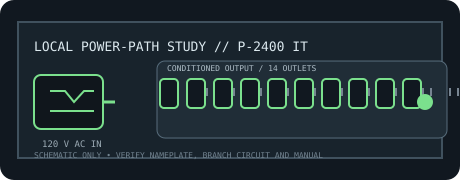

[ RACKMOUNT LINE CONDITIONER // EXACT MODEL ]
Furman P-2400 IT
20 A, 2400 W rackmount balanced-power conditioner for low-noise systems; it uses isolation and filtering, not AVR or battery backup.

ARCHIVAL IDENTIFICATION: Preserve exact model and regional suffix, nameplate, serial/date code, outlet map, manual revision and observed condition. Similar product-family names do not prove electrical equivalence.
Model specifications
| Manufacturer / exact model SKU | Furman P-2400 IT. Verify full regional suffix and revision from the physical nameplate. |
|---|---|
| Catalog category / topology | Line conditioners — rackmount AC conditioner. No battery or stored-energy backup. |
| Input voltage / supported range | 120 V AC nominal North American source; the cited manufacturer summary provides no numeric continuous input operating range and this is not an AVR. EVS shutdown is specified above 140 V AC; that is a trip threshold, not a regulation range. |
| Output voltage / range | Nominal 120 V AC symmetrically balanced, isolated output; no voltage regulation/correction range is specified. |
| Capacity / current | 20 A / 2400 W maximum aggregate rating. |
| Regulation / conditioning functions | Symmetrical balanced-power isolation, stated 80 dB common-mode noise reduction over 20 Hz–20 kHz, LiFT filtering, SMP protection, EVS shutdown and selectable ground-lift function. |
| Outlets / connectors | Manufacturer references differ by revision: the current product page describes ten heavy-duty Hubbell/GFCI-protected receptacles, while the linked archived datasheet lists fourteen total (twelve rear and two front convenience outlets). Verify the physical outlet map against the exact unit/manual before use. |
| Response / continuity | Continuous transformer-isolated output; no AVR transfer time or battery ride-through. Datasheet surge-protection response is 1 ns. |
| Compatibility | 120 V rack equipment explicitly suitable for the model’s balanced/isolation output and 20 A rating. Check equipment compatibility with balanced power and follow the prescribed grounding arrangement; it is not a UPS. |
| Electrical safety / installation limits | Connect only to a properly grounded 20 A branch circuit. Never improvise ground lifting or remove protective-earth conductors; follow the manual and qualified local electrical practice. Isolated/balanced output is not permission to defeat safety grounding. |
Service and archival notes
- Record the AC source, loaded current, connected equipment, observed voltage and test conditions separately from manufacturer-rated values.
- This is a conditioning/distribution appliance, not a UPS: it cannot maintain output through a mains interruption.
- Never open energized mains equipment. Quarantine units with damaged cords, overheated connectors, compromised enclosure or grounding, or evidence of liquid ingress.
- Use the exact regional manual/nameplate for connector, branch-circuit, mounting, grounding and load requirements; this static record is not an installation approval.
Manufacturer sources and manual
- Furman manufacturer product page — P-2400 ITProduct-family overview and manufacturer-stated functions. Confirm the complete model label and regional variant.
- Furman official operating manual — P-2400 ITManufacturer instructions for ratings, connections, operation and electrical safety.
- Furman official datasheet — P-2400 ITManufacturer model specifications; ratings and feature details are revision-sensitive.